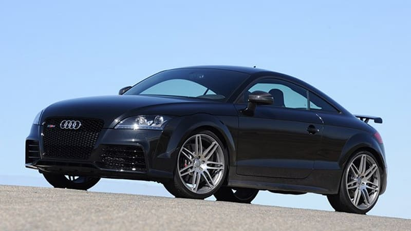
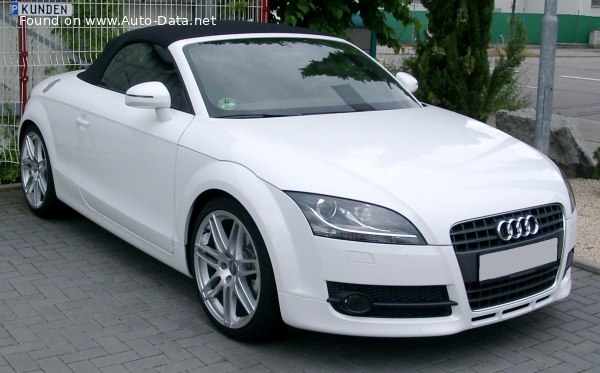
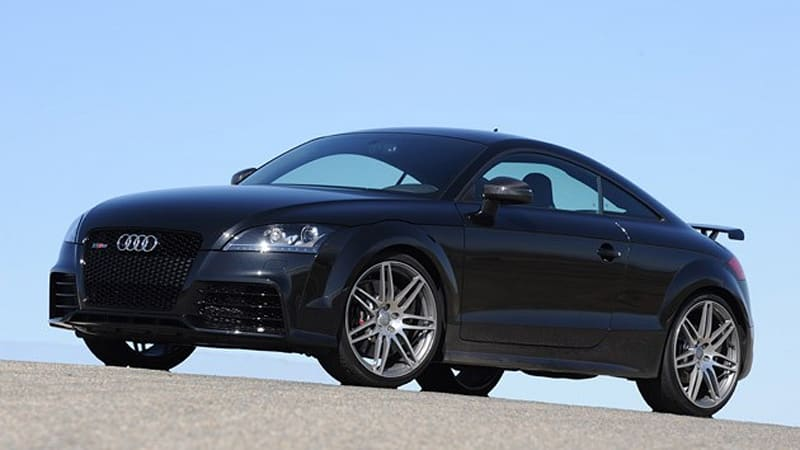
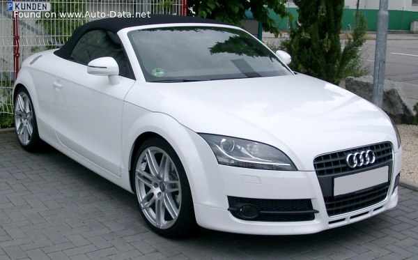

| De ce tip este caroseria, Audi TT Roadster (8J)? |
Roadster, 2 Uşi, 2 scaune |
|
Care este consumul de combustibil, Audi TT Roadster (8J) 2.0 TDI
(170 Hp) quattro? 2008
|
5.5 l/100 km extraurban
18.18 km/l urban
|
| Cât de ECO este mașina, Audi TT 2.0 TDI (170 Hp) quattro? |
144 g/km CO2 Euro 5 |
|
Cât de rapidă este mașina, 2008 TT Roadster (8J) 2.0 TDI (170 Hp)
quattro?
|
223 km/h | 138.57 mph
0-100 km/h: 7.7 sec
0-60 mph: 7.3 sec
|
|
Care este puterea motorului, Audi TT Roadster 2008 2.0 TDI (170 Hp)
quattro?
|
170 CP, 350 Nm |
|
Care este volumul motorului, Audi TT Roadster 2008 2.0 TDI (170 Hp)
quattro?
|
2.0l
1968 cm3
120.09 cu. in.
|
|
Câți cilindri are motorul, 2008 Audi 2.0 TDI (170 Hp) quattro?
|
4, in linie |
|
Care este sistemul de transmisie, Audi TT Roadster (8J) Roadster
2008 2.0 TDI (170 Hp) quattro?
|
Tracţiune integrală (4x4).
Motor cu combustie interna
|
| Care este lungimea vehiculului, 2008 Audi TT Roadster? |
4178 mm |
| Care este lățimea vehiculului, 2008 Audi TT Roadster? |
1842 mm |
|
Care este greutatea vehiculului, 2008 Audi TT Roadster (8J) 2.0 TDI
(170 Hp) quattro?
|
1415 kg |
|
Care este masa maximă admisă, 2008 Audi TT Roadster (8J) 2.0 TDI
(170 Hp) quattro?
|
1735 kg |
| Cât de mult spațiu portbagaj, 2008 Audi TT Roadster? |
250 l |
|
Câte transmisii are cutia, Ce tip este cutia de viteze, 2008 Audi TT
Roadster (8J) 2.0 TDI (170 Hp) quattro?
|
6, cutie manuală |
 


